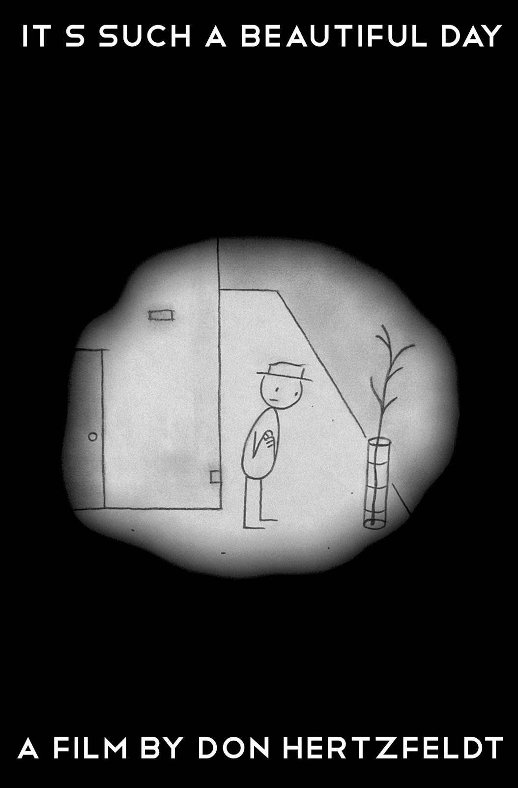
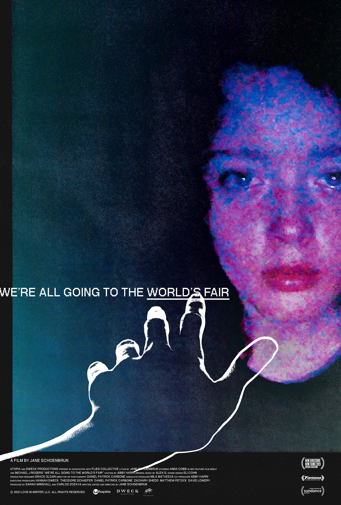
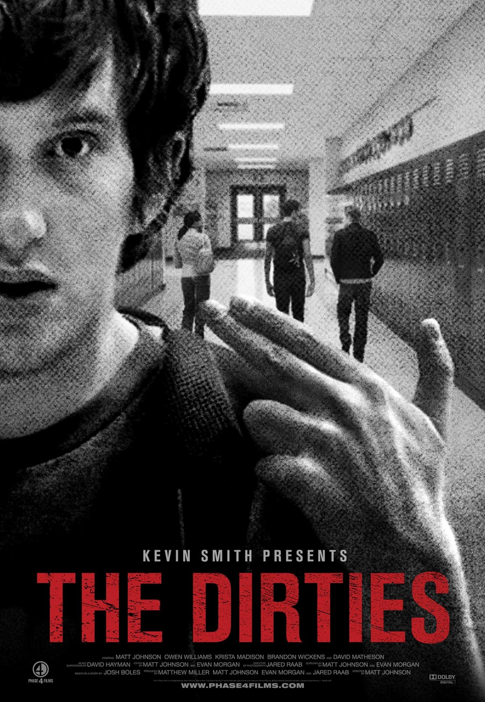
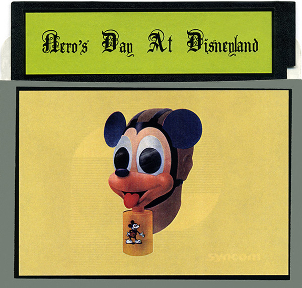
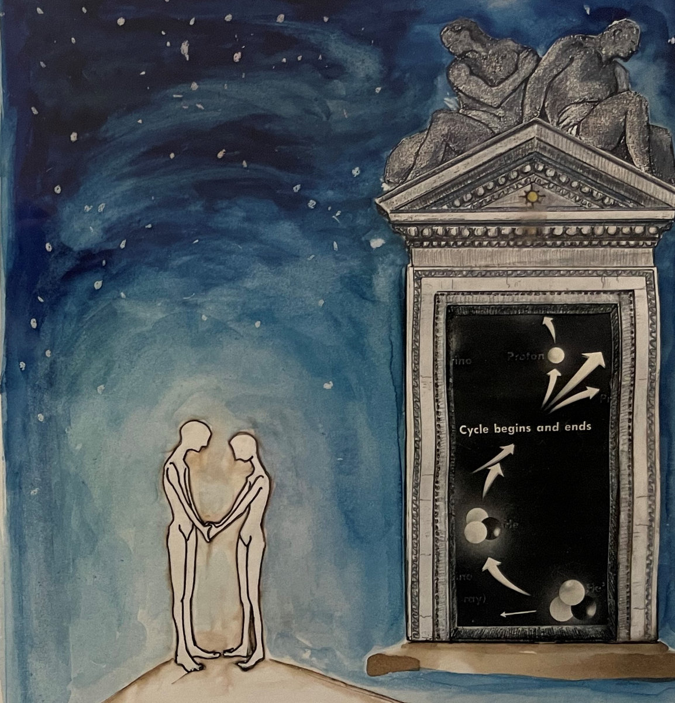
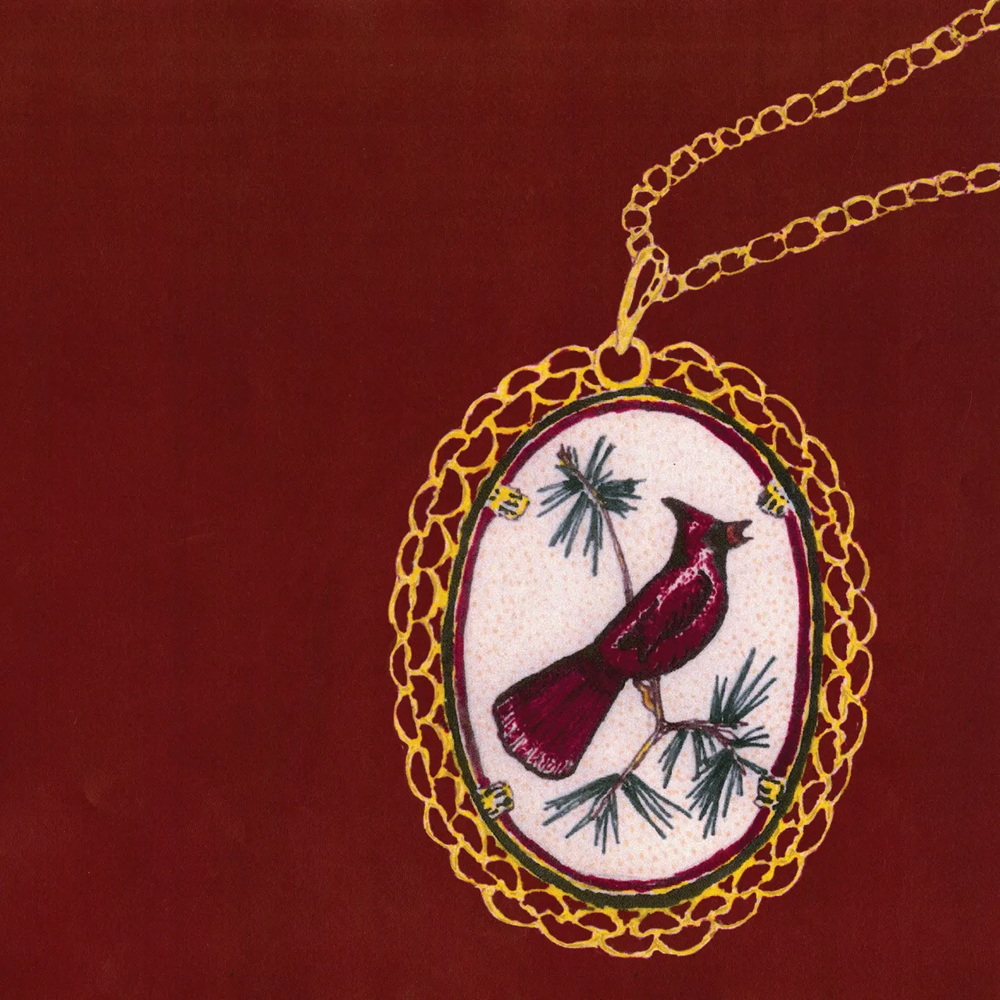

zoe's current obsessions
the things zoe is really into right now
film

I was fortunate enough to get to meet and speak with Don Hertzfeldt a few different times during the screening tour for this film and his new short Me, and seeing this on the big screen for the first time was a truly beautiful experience. A simple, beautiful and truly sad animated experience unlike any other.
watch

The release of Jane Schoenbrun's new, Emma Stone-produced film I Saw the TV Glow caused me to revisit this incredibly authentic exploration of what it's like to grow up in the shelter of the internet. This film's transness is subtle but powerful, and this film still remains one of the most unique and impactful experiences of the 2020s.
watch

A recent rewatch of this film cemented it as not only my favorite "found footage" film ever, but also one of my favorite films period. For a Canadian film, The Dirties still manages to capture American teenage life perfectly, making for one of the most reflexive and emotionally potent love letters to filmmaking ever created.
watch
music

An incredibly fun and weird debut record from Nero's Day at Disneyland, a project from the 2000s spearheaded by the pioneer of trans glitch music herself Lauren Bousfield. This album has more of a synth punk edge than the records to follow, and remains the only NDAD release with vocals (and beautifully strange ones at that).
listen

A criminally underappreciated midwest emo record from the band Ribbon Fix which is finally gaining some widespread recognition thanks to the the song One Last Cigarette's popularity with the YouTube algorithm. The 6 track run at the beginning is truly something to behold.
listen
listen

This record from Friko has remained my favorite album of 2024 ever since I first heard it, and for good reason. The songs on this album are beautiful, melancholy, and feature some really great chord progressions, with some really pretty vocals and lyrics to boot. Truly can't recommend this one enough.
listen